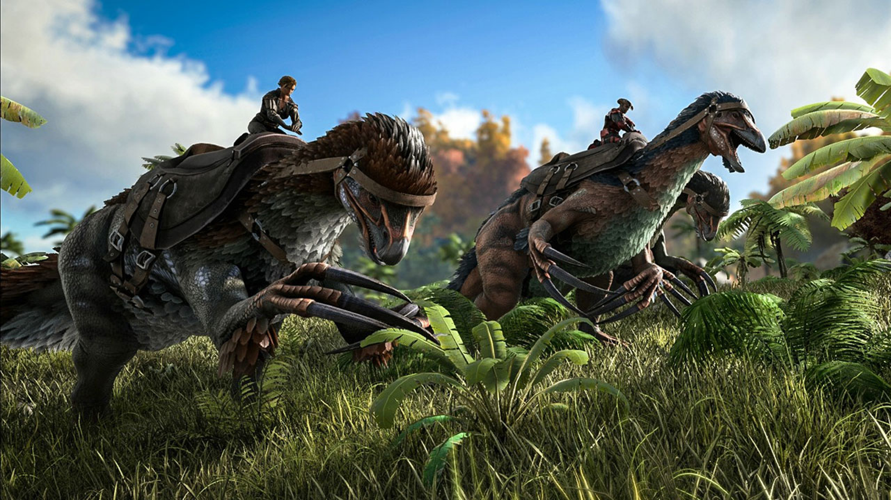
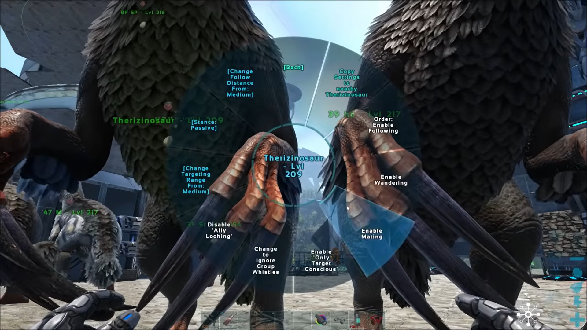
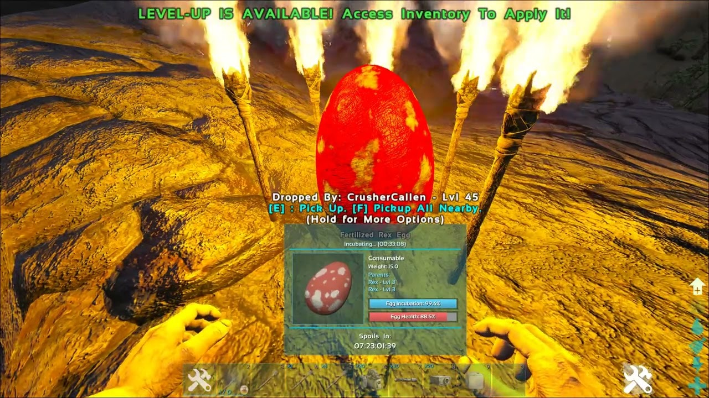
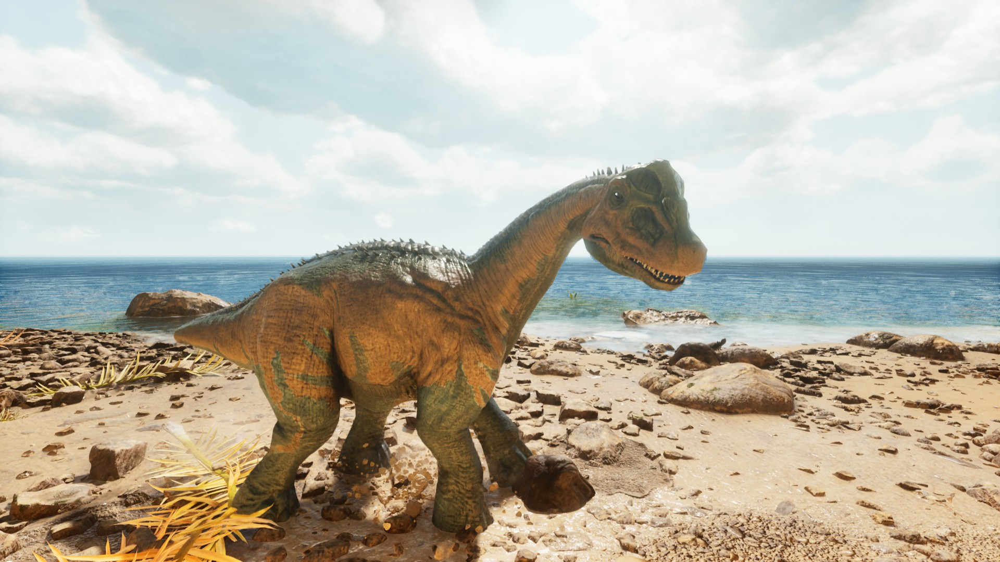
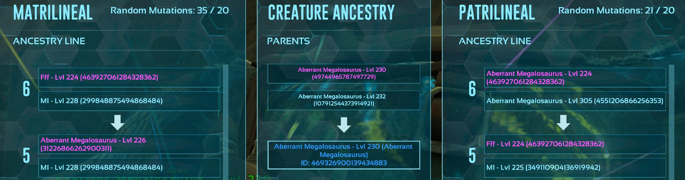

Breeding i Mutations
Skoro sva stvorenja u ARK-u se mogu razmnožavati i imati mlade.
Kod naših pripitomljenih dinosaura je to korisno jer njihovi mladi mogu imati jaće statistike od roditelja, npr. više health-a ili više dmg.
Muški i ženski dinosauri:
Dinosauri u ARK-u mogu biti muški ili ženski. Nasumično se stvaraju kao muški ili ženski u divljini.
Njihov spol obično nema nikakve razlike u statistikama, ali imaju rijetke iznimke gdje muški i ženski dinosauri imaju različite sposobnosti, npr. Shadowmane.

Breeding:

Kada imamo jednog muškog i jednog ženskog dinosaura, možemo ih poćeti breed-at.
Za to je potrebno ih postaviti blizu jedno drugom i odabrati im ili "Enable Mating" ili "Enable Wandering" nakon ćega će se pojaviti "Mating progress" bar.
Ako dinosaurima dozvolimo breeding preko "Enable Wandering" onda će moći se slobodno kretati, no ako se previše udalje jedan od drugog, progres će se resetirat.
Jaja:
Nakon što je Mating progress došao na 100%, ženski dinosaur će izleći jaje. To jaje se nakon toga mora izleći u idealnim temperaturama. Jaju nesmije biti prehladno ni prevruće jer se inače neće izleći i počet će gubit health.
Ako su se razmnožavali sisavci, npr. Dire Wolf, onda neće biti jaja nego će ženska životinja postat trudna i trebat će se prićekati da dođe beba.

Imprint:
Kada se beba izlegne, potrebno je brinuti se o njoj. Potrebno je pazit na hranu i health bebe da nebi ogladnila.
Moguće je bebu i imprintati. Time će dobiti dodatne statistike i biti još jača kada izraste.
Za imprintanje je moguće dragati bebu, ići u šetnju s njima ili nahraniti ih traženu hranu.

Mutacije i statistike:

Bebe mogu prenesti nasumićne statistike od strane mame ili tate. Ako prenese veći health od strane mame i veći dmg. od strane tate, beba će biti jaća od roditelja kada izraste.
Također je moguće da preuzme slabije statistike od strane svojih roditelja ćime će biti slabija kada izraste...s tim bebama svaki igrač radi što hoće, ali neki imaju malo okrutna rješenja...npr. xp za ostale dinosaure...
Bebe imaju 7,31% šanse da dođu sa mutacijom. Ta mutacija može biti na bilo kojoj statistiki, no ako je na staistiki za brzinu, neće se primjeniti i to se smatra propalom mutacijom.
Svaka mutacija također mijenja boju skin-a dijeteta pa se mogu dobiti neke interesantne boje.